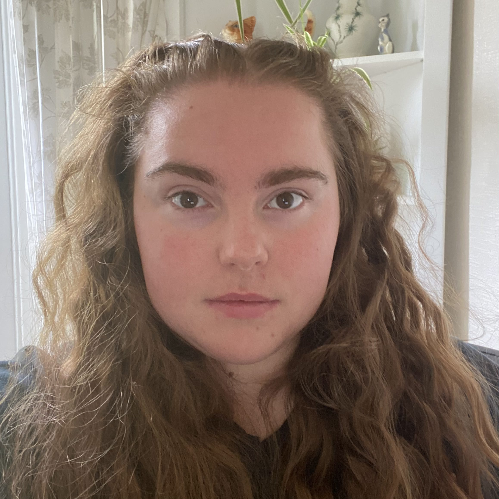
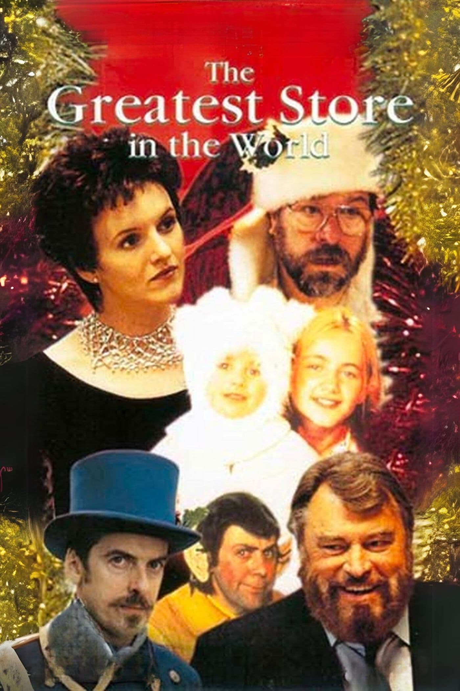
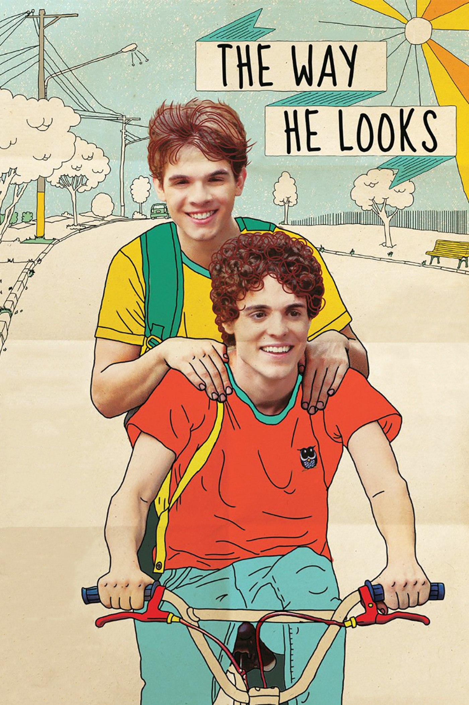

Laura Way

Home |
Portfolio |
Images |
Links |
|---|
My name is Laura Way, I went to Writhlington School Sixth Form and have been volunteering at Cats Protection charity shop for the past 5 years. I work there 20 hours per week, splitting my time between the retail shop and the online hub.
In my spare time I like to visit the cinema and try to make the effort to go at least once per week. The most films I've seen in the cinema in one day was 4 (which I've done twice now) where I was in the cinema for 10 hours, I almost became a piece of the furniture.
|  |  |
As part of a ClickStart course run by Bath Spa University I have studied various digital creative skills such as digital marketing, UI/UX design and web development.
This role includes the researching of donated goods to find their value, pricing them accordingly, and them listing them on eBay. I take a range of detailed photographs to help showcase each item, and I put my interests/hobbies to use by helping with any specialist knowledge I may have on certain items.
I work as part of a team and on my own to help with the running of the shop. I have helped train multiple members of the team when there was a new till system layout, including sales, refunds, and cashing up. I am solely responsible for the book and media department of the shop involving sorting, organising, pricing,and restocking items.